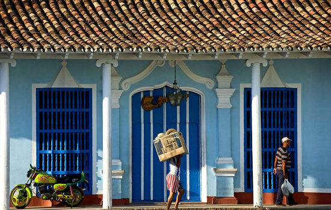

古巴旅游须知及注意事项
遥远的南美洲好像在另一个世界，去古巴旅游应该知道哪些事？
一、气候
属温和亚热带草原海岛气候，年平均气温为24—6度。

二、时差
夏天比中国慢12个小时左右，冬天慢13小时
三、货币
古巴的货币是比索。但外国游客一律使用美金或者欧元。不接受旅行支票。可以使用信用卡如：“MASTER”，“VISA”，“CABLE”，“BFI”等

四、通讯
国际长途电话通过邮电局或国际电话局，在旅馆房间内即可拨打。自己有手机的先拨打711。
五、电压
电压：110V 60HZ，扁平插座，有些旅馆的电压为220V。
六、酒店
酒店内不备个人洗漱用具如牙刷、拖鞋等，请自备。入住酒店后请马

上索取酒店名片以备不时之需，拉美国家的旅馆房间不提供开水，若有需要，可向服务台或导游人员提出，他们会通知服务生送水到房间，宾馆的水龙头流出的自来水请不要直接饮用。，
七、小费：
古巴有付小费的习惯，在酒店等场合得到帮助后请打赏小费，一般每次给2-3美金即可。

八、治安状况
古巴社会比较稳定，治安较好。无严重的恐怖活动和刑事犯罪，但抢劫偷盗也时有发生。特别是在人口比较少，条件比较落后的地区，出门须结伴而行，尽量少带现金和贵重物品。穿着适当，不要太引人注目。出门时，护照、机票、钱财等单独保存，备好证件复印件。如遇险情，及时报警。如有需要，应尽快与中国大使馆取得联系
九、医疗卫生
古巴公民享受公费医疗。每个社区都设有社区医疗站，一般疾病就近在所属医疗站治疗，遇重病号由社区医疗站送往大型医院治疗。外国人在古巴就医需到专门的涉外医院(CLINICA CIRA GARCIA)，比古巴人就医的医院条件要好，但收费相当高，且只收古巴可兑换比索。

十、风俗禁忌
古巴人大多信奉天主教，一部分人信奉基督教新教，他们忌讳“13”和“星期五”；他们忌讳戴帽子，认为只有亲人去世才戴帽子悼念（貌似现在这个传统特点也不那么突出）；他们忌讳以刀剑作礼物送人，认为这是割断友谊的象征；他们在饮食上特别重视菜肴的色彩。
十一、中国驻古巴大使馆EMBASSY OF THE PEOPLE'S REPUBLIC OF CHINA IN THE REPUBLIC OF CUBA